About Us
About Narayana Netralaya
Four decades of advanced, compassionate eye care — built on clinical excellence, cutting-edge technology and a founder's vision of giving back.
Our Founder
Dr Bhujang Shetty
Founder, Narayana Netralaya
“Your inspiration and teaching will be in the heart of all we do.”
Every value in these pages began with him: ethical care that puts the patient first, a research mind that keeps asking why, healing that reaches the body, the mind and the spirit, and the belief that food itself can be medicine. We carry his teaching forward in every patient we see and every surgeon we train.
Our Philosophy
The nucleus never changes.
At Narayana Netralaya nVision, the patient is the nucleus. Technology, research, training and community work all revolve around one question: what is truly best for this person? We carry forward the moral and ethical charm of the traditional hospital, where the doctor knew the patient by name and treatment was never a transaction, and we pair it with the most advanced eye care in the world.
Patient
Pillar 01 · Our Foundation
Timeless ethics, cutting-edge care
We were built on the values of the traditional hospital: honesty, compassion, and time for every patient. Technology has never replaced those values here. It serves them.
Modern medicine, with an old-fashioned conscience.
Pillar 02 · Our Vision
Holistic & spiritual healing
Healing is more than a clear cornea or a sharp retina. It includes the body, the mind and the spirit, and the quiet strength of belief.
Your faith shall heal you.
Pillar 03 · GROW Lab & nVision
Research mindset: GROW Lab & nVision
Every patient is seen with a research mindset. Questions raised in the clinic are answered in the lab, and what the lab discovers comes back to the clinic.
We look at everything with a research mindset.
Pillar 04 · Our People
The best-trained hands
Our doctors are trained at the finest institutions, and many have been trained and mentored within Narayana Netralaya itself.
Trained by the best. Mentored by our own.
Pillar 05 · Diagnostics & Imaging
First to the frontier of imaging
We bring in the most advanced imaging and diagnostics as soon as they are launched and approved for human use.
The best technology, as soon as it is ready for patients.
Pillar 06 · Surgery
Customised surgery, proven outcomes
No two eyes are alike, so no two procedures should be.
Customised to the eye, not to the machine.
Pillar 07 · Refractive Surgery
World leaders in refractive surgery
Our refractive team has worked on every major refractive platform produced in the world.
Not one machine. The right combination for your eye.
Pillar 08 · Dry Eye
Dry eye, decoded by biomarkers
Dry eye is an enigma. We approach it holistically: we read the biomarkers in the tears, target treatment to them, and adjust as those biomarkers change.
Treat the biology, not just the symptom.
Pillar 09 · Exploring the Unexplained
X-PLAIN: centre for the unknown
We begin where answers are incomplete. X-PLAIN is our centre for conditions where medicine has had little to offer.
When there is no answer yet, we go and find one.
Pillar 10 · Oculofacial Aesthetics
Oculofacial aesthetics
The eyes are the first thing people notice. Our oculofacial aesthetics service helps take years off, safely and naturally, in the hands of eye specialists.
Beauty, with the precision of eye surgery.
Pillar 11 · Social Commitment
Care without a price tag
Community care is a commitment to society, not a line of business.
No one is turned away for want of money.
Pillar 12 · Community Outreach
Adopting districts, screening every child
We adopt entire districts. Our teams screen children, identify those who need help, and provide spectacles and treatment at no cost to their families.
Every child deserves to see the blackboard.
Pillar 13 · Training & Mentorship
Building next-gen surgeons
Training the next generation of surgeons is one of our central missions.
The future of eye care is being trained here today.
“Old-world values. Next-world technology. One centre: you.”
The thirteen pillars on the following pages describe how we work: the values we hold, the science behind our decisions, the people who care for you, and the communities we serve. Alongside them, our translational lab and the Vision Synapse clinics connect the eye to the whole person.
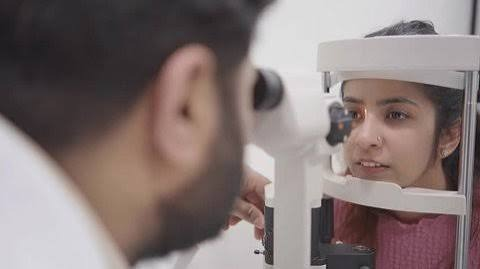
Heritage of careCutting-edge technologyOur Foundation
Pillar 01: Timeless Ethics, Cutting-Edge Care
We were built on the values of the traditional hospital: honesty, compassion, and time for every patient. Technology has never replaced those values here. It serves them.
Need, never numbers
Treatment advised on need, never on numbers.
Transparent counselling
You understand every option before you choose.
Technology with purpose
The newest technology, used only where it genuinely helps you.
Bond built on trust
A doctor–patient relationship built on trust, not on transactions.
“Modern medicine, with an old-fashioned conscience.”
Our Vision
Pillar 02: Holistic & Spiritual Healing
Healing is more than a clear cornea or a sharp retina. It includes the body, the mind and the spirit, and the quiet strength of belief. Our guiding vision remains: your faith shall heal you.
The whole person
Systemic health, lifestyle, stress and emotional wellbeing, all considered.
Mind matters
Anxiety and psychology are recognised as part of the illness, and part of the cure.
Calm spaces
Compassionate, peaceful surroundings designed for recovery.
Hope as an ally
Hope, belief and trust treated as allies in every treatment.
“Your faith shall heal you.”
Holistic Wellness
Food as Medicine: Complete Holistic Healing
Healing does not begin in the clinic. It begins on your plate, in your mind, in how you move and rest, and in what you believe. We bring food, mental and physical wellbeing together with advanced eye care, with guidance shaped by your biomarkers, your health and your life.
Food
- Colourful, seasonal plates: greens, carrots, amla, berries
- Millets, whole grains and nuts for steady blood sugar
- Healthy fats from fish, flax and walnuts for the tear film
Mind
- Calm, stress-aware care; anxiety is part of the illness and the cure
- Breathing, meditation and restful sleep
- Counselling and support when you need it
Body
- Movement, yoga and time outdoors in daylight
- Screen breaks: every 20 minutes, look 20 feet away for 20 seconds
- Managing diabetes, blood pressure and hormones with your physician
Beyond
- Faith, purpose and community
- Care for the whole family
- “Your faith shall heal you.”
Inspired by our founder
Dr Bhujang Shetty, the greatest proponent of food as medicine, whose teaching shapes our complete, holistic approach to healing.
Social Commitment
Pillar 11: Care Without a Price Tag
Community care is a commitment to society, not a line of business. Children, cataract patients and people with eye cancers receive free or heavily subsidised treatment, with no thought of financial gain.
Free & subsidised surgery
For every patient in need, regardless of means.
Children’s eye care
Paediatric cataract and childhood eye-cancer (retinoblastoma) care.
Care for premature babies
Laser treatment for babies at risk of blindness from ROP.
Eye tumour care
Treatment for eye tumours, whatever the family can afford.
“No one is turned away for want of money.”
Community Outreach
Pillar 12: Adopting Districts, Screening Every Child
We adopt entire districts. Our teams screen children, identify those who need help, and provide spectacles and treatment at no cost to their families.
School and community eye screening.
Free spectacles for every child who needs them.
Onward treatment and surgery at no cost.
Long-term follow-up, district by district.
“Every child deserves to see the blackboard.”
Our Promise
The nucleus is always you.
Every machine we buy, every paper we publish, every surgeon we train and every child we screen serves one purpose: finding the very best for every person who walks through our doors. That is the old charm of an ethical hospital, carried into the future.
“Your faith shall heal you.”
safe hands
Find a Doctor
Expert specialists near you
Explore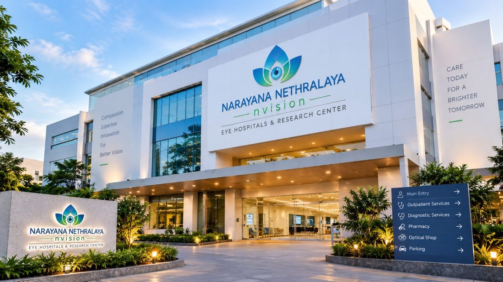
Closer to aclearer tomorrow
Our Centres
Visit us near you
Explore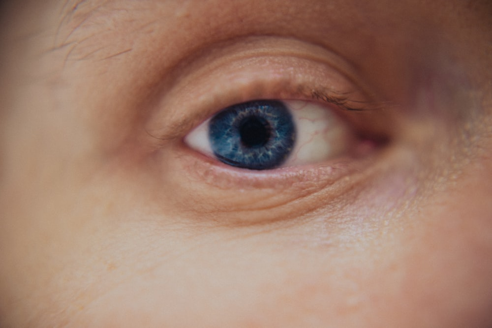
See lifemore clearly Clearer Vision
Brighter Lives
Specialities
Comprehensive treatments
Explore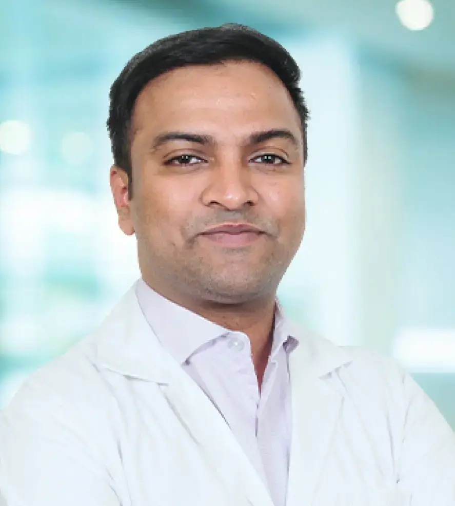
We arehere for you
Patient Support
Guides & assistance
ExploreOur Specialities
Explore eye care
Specialised care for every stage of life.
Cataract
Clearer vision for a brighter tomorrow.
Learn more
Retina
Advanced care for a healthier retina.
Learn more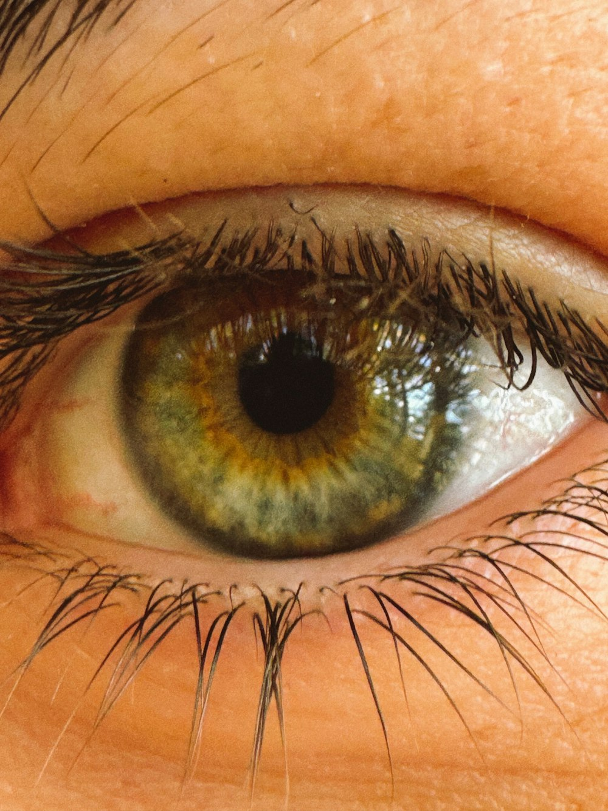
Cornea
Restoring clarity for a better tomorrow.
Learn more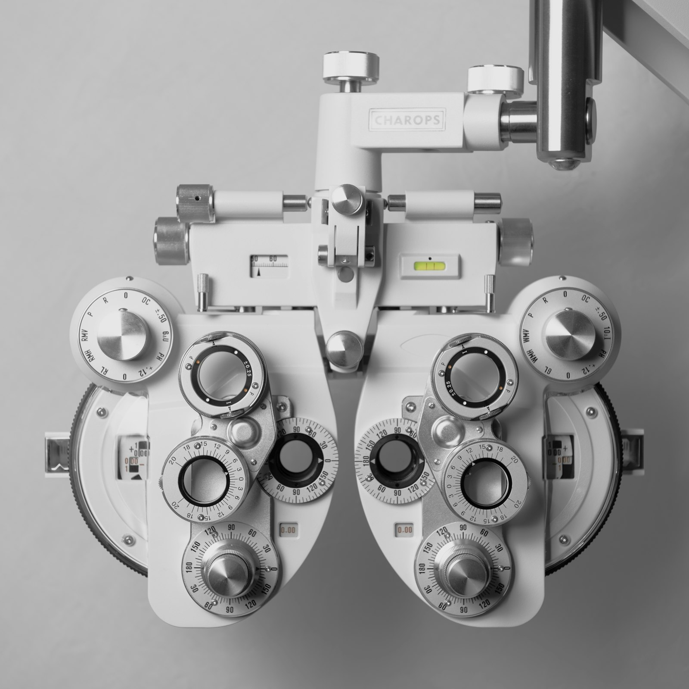
Refractive Surgery
Freedom from glasses. A clearer you.
Learn more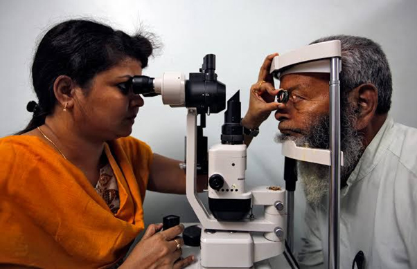
General Eye Care
Healthier eyes for brighter days.
Learn more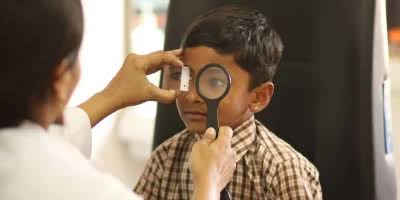
Paediatric Eye Care
Nurturing young eyes for a brighter future.
Learn moreWhy Trust Us
Trusted eye care.Advanced technology.
Combining expertise, compassion and innovation for healthier eyes and brighter tomorrows.
About Us
Why Narayana Netralaya?
More than just eye care — a commitment to brighter lives. We combine clinical excellence, advanced technology and compassionate care to give you and your family the best possible vision outcomes. Read our full story, meet our founder and see why patients trust us.
Learn More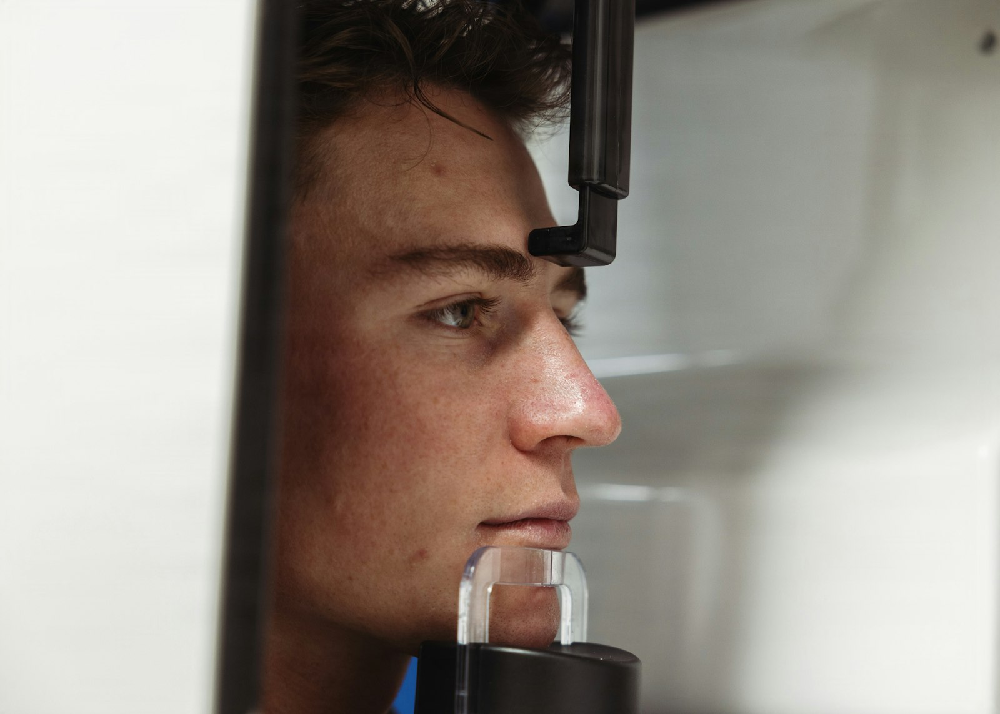
Brighter Lives
Our Doctors
Meet the Experts
A dedicated team of ophthalmologists bringing expertise, compassion and advanced care to help you see the world more clearly.
Experienced.
Compassionate.
Focused on You.
Specialists for
All Stages of Life
Our Locations
Find a centre
near you
Quality eye care, closer to you.
Across Bengaluru
Eye Specialists
Timings
Your Vision
Our Priority
“Better Eyes
Brighter Lives”
Bommasandra
Main CentreBommasandra Industrial Area, Bengaluru – 560099
OPD & diagnostics · Mon–Sat, 9am–7pm
Electronic City
Hosur Road, Electronic City, Bengaluru – 560100
OPD & diagnostics · Mon–Sat, 9am–7pm
Bannerghatta Road
Bannerghatta Road, Bengaluru – 560076
OPD & diagnostics · Mon–Sat, 9am–7pm
Whitefield
Whitefield Main Road, Bengaluru – 560066
OPD & diagnostics · Mon–Sat, 9am–7pm
Indiranagar
100 Feet Road, Indiranagar, Bengaluru – 560038
OPD & diagnostics · Mon–Sat, 9am–7pm
Patient Stories
Because every vision matters
Real experiences from patients who trusted us with their eye care.
Insights
Latest news
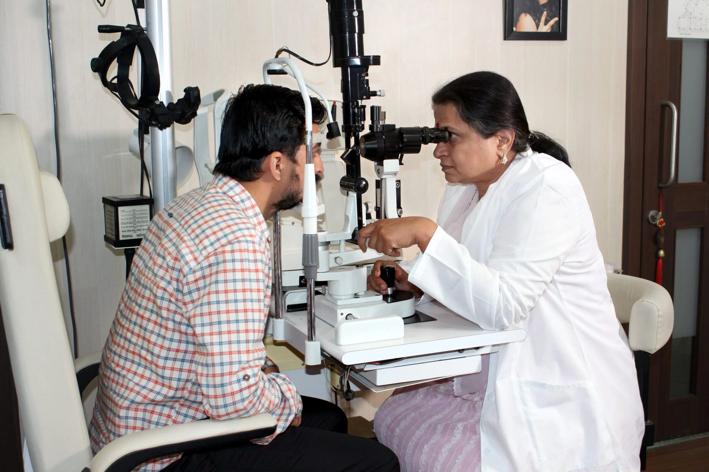
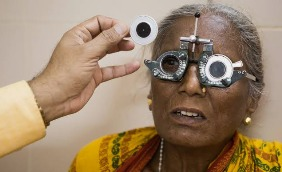
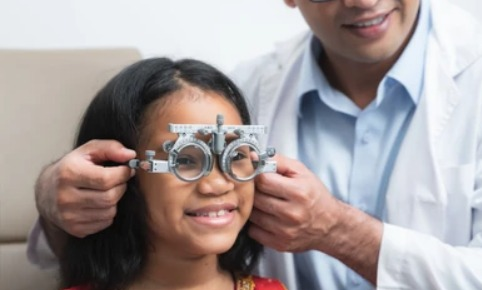
Ready to take care of your vision?
Book an appointment today — our team is ready when you are.